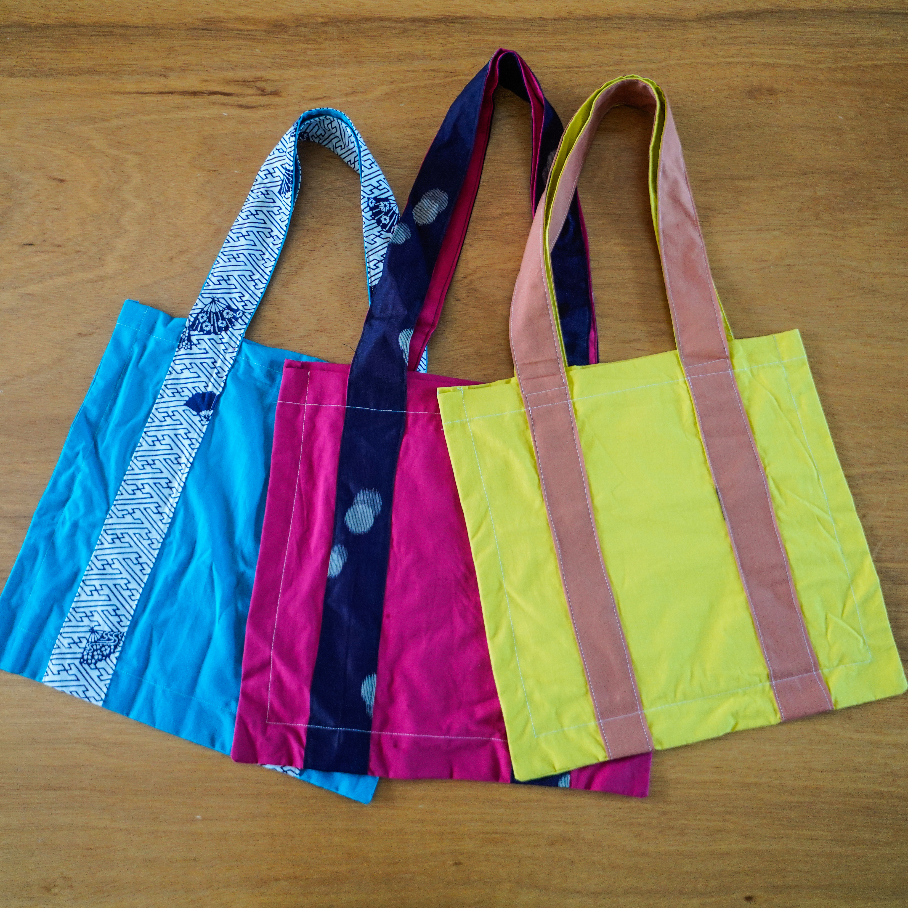

06 / Remake Product
着物トートバッグ「みそ」
トートバッグ、コンセプト、ショップカードなどをすべてオリジナルで考え、制作しました。着物地の質感や柄の個性を活かしながら、日常の服装に少し遊び心を足す「カジュアルPOP」なバッグを目指しました。

カジュアルPOPな着物リメイク
「普段はつい地味な服装になりがち」「個性のある一品が欲しい」といった要望に応えるために生まれたバッグです。着物という布の材質や柄の個性を活かして、シンプルだけど遊び心のある品に仕上げました。着物リメイクには見えない軽やかさを出すために、カラフルな尾州の布を組み合わせています。

余っている着物地を、若い世代にも届く形へ
着物地は、現在住んでいる徳島県神山町の皆さんからいただきました。「誰も着れないから余ってるの」「こんな可愛い柄、私は着れないから」という声から、若年層の着物離れが進んでいる現状が垣間見えました。世の中の着物リメイクは40〜60代女性向けのものが多く、若い世代が興味をそそられるような構造になっていないと感じました。そこで「みそ」では、着物地にカラフルな布を合わせ、着物リメイクらしすぎないカジュアルさを目指しました。

ものづくりの原点と、若い感性
私自身、着物と洋裁に興味を持ったのは、元着付け師で、基本なんでも作ってしまう祖母の影響です。祖母がお正月に着物を着ている姿を見て「私も着てみたい」と言ったら着付け教室が始まり、祖母の家でテレビを眺めて暇そうにしていたら、巾着作り講座が始まりました。今思えば、あの時間はものづくりの原点になっているのかもしれません。
祖母は80代とは思えない感性で、着物リメイクもやってのけています。この間はセットアップという概念まで持ち出してきていて、その吸収力には脱帽でした。既存の顧客だけでなく、新しい世代の顧客を獲得していくには、このいつまでも若い感性を持つことが重要だと感じます。「みそ」は、素材の記憶を残しながらも、若い世代が手に取りたくなる見え方を探した制作でした。